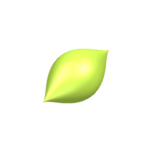
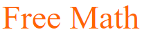
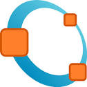
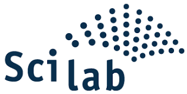
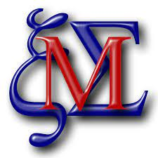
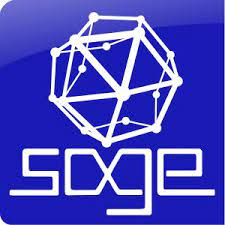

Classificação por recursos
Softwares sublinhados em VERDE estão disponíveis em portugues e escritos em JavaScript
Softwares sublinhados em LARANJA estão disponíveis apenas em inglês e escritos em Javascript
Softwares sublinhados em VERMELHO estão disponíveis apenas em inglês e escritos em outras linguagens
Coletânea de Softwares Livres
Aqui estão alguns softwares livres úteis para o ensino de matemática:
SURFER
O SURFER é uma ferramenta especializada que cria imagens de superfícies algébricas no espaço usando equações polinomiais. Ele permite uma representação visual dessas superfícies, transformando equações em formas visuais, mas é direcionado para um propósito matemático específico e detalhado.
Disponível em portugues e escrito em Javascript
Proposta de utilização: O SURFER pode ser utilizado para visualizar superfícies algébricas em 3D, o que pode ser útil para o ensino de matemática no ensino médio e superior.
Geogebra

O Geogebra foi criado para o ensino médio e é ótimo para criar formas geométricas. Com ele, podemos alterar parâmetros e ver como isso afeta as figuras que estamos estudando.
Proposta de utilização: O Geogebra pode ser utilizado para visualizar formas geométricas, o que pode ser útil para o ensino de matemática no ensino médio e superior.
Desmos

O Desmos é uma ferramenta de gráficos que permite a criação de gráficos de funções, expressões, equações e geometria. Ele é usado principalmente para o ensino médio e superior.
Proposta de utilização: O Desmos pode ser utilizado para visualizar gráficos de funções, o que pode ser útil para o ensino de matemática no ensino médio e superior.
FREEMAT
O FreeMat é um software gratuito útil para professores de matemática, pois oferece recursos para realizar cálculos numéricos, algébricos e análises estatísticas, sendo uma ferramenta valiosa para auxiliar no ensino e na resolução de problemas matemáticos de forma computacional.
Proposta de utilização: O FreeMat pode ser utilizado para resolver problemas matemáticos de forma computacional, o que pode ser útil para o ensino de matemática no ensino médio e superior.
Octave
O GNU Octave é um software livre para computação numérica, semelhante ao MATLAB. Ele fornece uma interface de linha de comando para resolver problemas lineares e não lineares numericamente e para realizar outras tarefas numéricas.
Proposta de utilização: O Octave pode ser utilizado para resolver problemas matemáticos de forma computacional, o que pode ser útil para o ensino de matemática no ensino médio e superior.
Scilab
O Scilab é um software livre para computação numérica, semelhante ao MATLAB. Ele fornece uma interface de linha de comando para resolver problemas lineares e não lineares numericamente e para realizar outras tarefas numéricas.
Proposta de utilização: O Scilab pode ser utilizado para resolver problemas matemáticos de forma computacional, o que pode ser útil para o ensino de matemática no ensino médio e superior.
Maxima
O Maxima é um sistema de álgebra computacional escrito em Lisp. Ele fornece recursos de manipulação simbólica, cálculo numérico, diferenciação, integração, expansão em séries, transformadas de Laplace, equações diferenciais ordinárias, sistemas de equações lineares e vetores, matrizes e tensores.
Proposta de utilização: O Maxima pode ser utilizado para resolver problemas matemáticos de forma computacional, o que pode ser útil para o ensino de matemática no ensino médio e superior.
SageMath
O SageMath é um software livre de matemática que combina mais de 20 softwares de código aberto em um único pacote. Ele fornece uma interface de linha de comando para resolver problemas lineares e não lineares numericamente e para realizar outras tarefas numéricas.
Proposta de utilização: O SageMath pode ser utilizado para resolver problemas matemáticos de forma computacional, o que pode ser útil para o ensino de matemática no ensino médio e superior.
Sites úteis
Aqui estão alguns sites úteis e abertos para o ensino de matemática:
Portal do professor - MEC
O Portal do Professor é uma ferramenta do Ministério da Educação que oferece um ambiente virtual de aprendizagem com recursos educacionais digitais. Ele oferece um repositório com mais de 50 mil objetos de aprendizagem, como planos de aula, jogos, animações, simulações, vídeos e áudios.
Matemática Multimídia - | Unicamp
Este portal apresenta a coleção Matemática Multimídia, composta por mais de 300 recursos educacionais voltados para o Ensino Médio na área de Matemática.
Geogebra - | Geogebra
Plataforma dinâmica que oferece ferramentas para geometria, álgebra, estatística e cálculo. Permite a criação de gráficos interativos e atividades educacionais.
S.O.S. Matemática - | S.O.S. Matemática
Portal educacional brasileiro que fornece videoaulas, exercícios resolvidos e material didático para diversas áreas da matemática.
Khan Academy - | Khan Academy
Oferece uma ampla variedade de vídeos e exercícios interativos gratuitos, cobrindo diversos tópicos matemáticos, desde o fundamental até níveis mais avançados.
Brasil Escola - Matemática - | Brasil Escola
Seção do portal Brasil Escola dedicada à matemática, com conteúdos didáticos, artigos, exercícios e provas.
Wolfram Alpha - | Wolfram Alpha
Ferramenta computacional poderosa que fornece respostas para consultas matemáticas e científicas, incluindo gráficos e passos de resolução.
Matemática Rio - | Matemática Rio
Plataforma brasileira com videoaulas e material didático para o ensino de matemática.
IME - USP - | Instituto de Matemática e Estatística da USP
Página do Instituto de Matemática e Estatística da Universidade de São Paulo, que pode conter materiais e informações úteis.
Oba! Rede de Computadores para o Ensino de Matemática - | Oba!
Projeto voltado para a produção e disseminação de materiais didáticos de matemática, incluindo livros, vídeos e jogos educacionais.